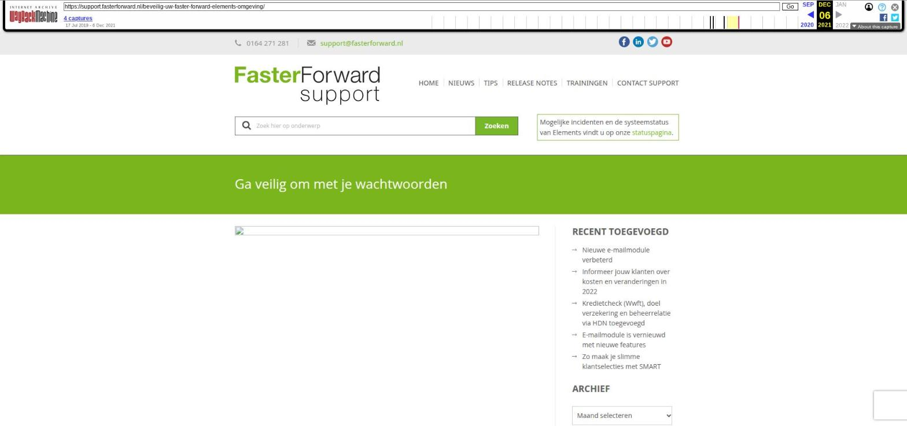

Ga veilig om met je wachtwoorden

Tekstinhoud
Wij doen dagelijks ons best om Elements veilig te houden. Doe jij met ons mee?
Hieronder hebben wij een aantal tips opgesteld die voor jouw organisatie heel nuttig kunnen zijn.
Pas wachtwoorden regelmatig aan
Mensen hebben de neiging om wachtwoorden te (her)gebruiken, omdat deze makkelijk te herinneren zijn. Dit komt de sterkte van het wachtwoord niet ten goede. In Elements zijn reeds voorwaarden opgenomen waar jouw wachtwoord aan moet voldoen. Zorg ervoor dat je deze zelf ook regelmatig aanpast (iedere 3-4 maanden).
Gebruik een passwordmanager
Om ervoor te zorgen dat jouw wachtwoord zo veilig mogelijk is, is het handig om een passwordmanager te installeren. Een passwordmanager, zoals Bitwarden, helpt om jouw wachtwoorden sterker en veiliger te maken.
Vind je het moeilijk om wachtwoorden te onthouden? Bewaar eventueel jouw wachtwoord ergens veilig op een speciaal programma, Om ervoor te zorgen dat jouw wachtwoord zo veilig mogelijk is, is het handig om een passwordmanager te installeren. Een passwordmanager, zoals Bitwarden. Bespreek intern hoe jullie de wachtwoorden bewaren. Faster Forward is hiervoor niet aansprakelijk.
Gebruik wachtzinnen
Een wachtzin zegt je misschien niet veel, maar is vaak veiliger en makkelijker te onthouden dan een wachtwoord. Wachtzinnen zijn hiermee makkelijker voor de gebruiker en moeilijker voor hackers.
Een wachtzin is een zin die voor jou heel bekend en logisch is, maar voor een ander onmogelijk om te raden. Combineer dit met een speciaal teken of een cijfer op het einde en je wachtzin is compleet.
Het is wel verstandig om geen bekende spreekwoorden te gebruiken. Deze zijn te eenvoudig te kraken.
Voorbeelden
Ikeetgraagpizza9!
Voetbalismijnpassie14$
Dirkwerktbijsmaragd0.
Extra beveiliging bij inloggen
Indien gewenst kun je ervoor kiezen om de beveiliging van je Elements omgeving aan te sterken met Two-factor authentication. Wanneer je dan, zoals gebruikelijk in Elements inlogt, krijg je nog een scherm die om een authenticatie code vraagt. Deze persoonlijke code haal je op door middel van een app op je mobiele telefoon. Om hier gebruik van te maken moet iedere medewerker de Google authenticator app downloaden.
Wil je gebruik maken van deze extra beveiliging? Stuur dan een e-mail naar support@fasterforward.nl
Houd je applicaties up-to-date
Wij zorgen ervoor dat Elements veilig en up-to-date blijft, maar doe jij dat ook voor je andere (online en offline) programma’s?
Het komt nog te vaak voor dat applicaties (zoals een website CMS), thema’s en plug-ins niet geüpdatet worden. Als je weet dat er sprake is van een security-risico, dan is het verstandig om dit te repareren. Je laat de voordeur van je bedrijfspand toch ook niet onbeheerd open staan? Dus waarom wel van jouw web-omgeving?
Geplaatst op 8 mei 2021 (Laatste update: 15 september 2021)